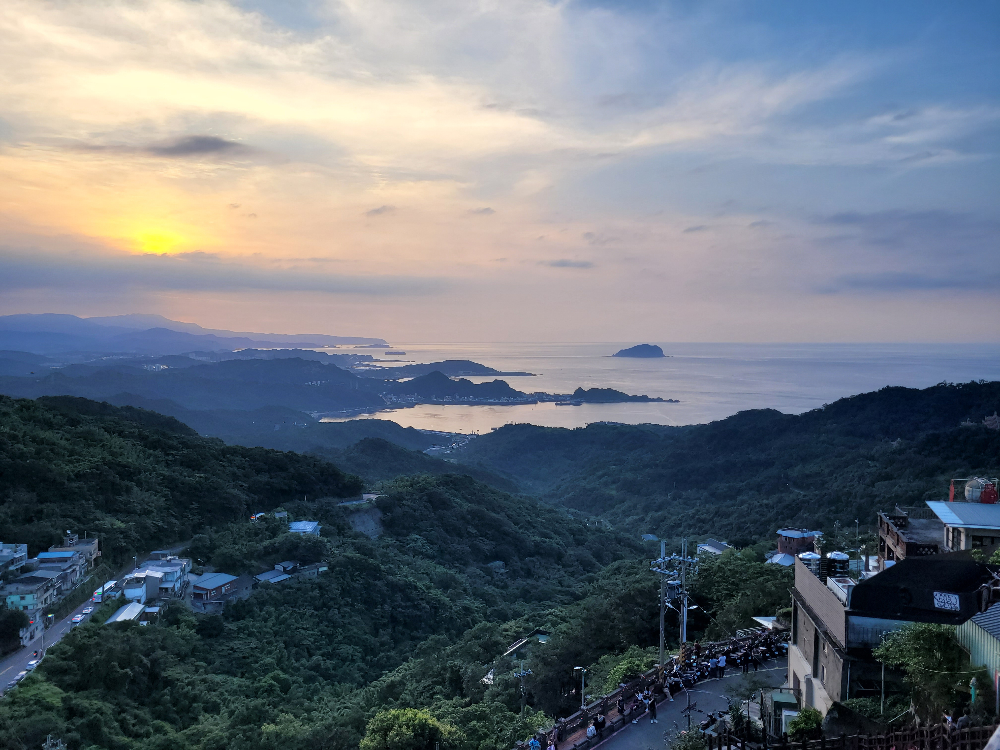
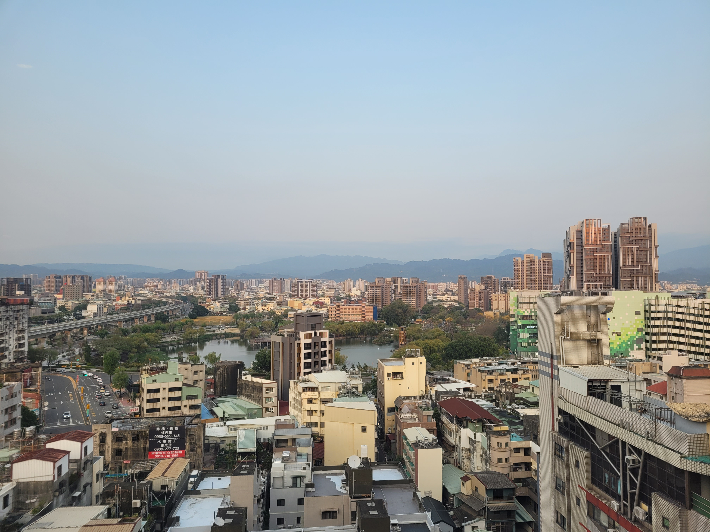
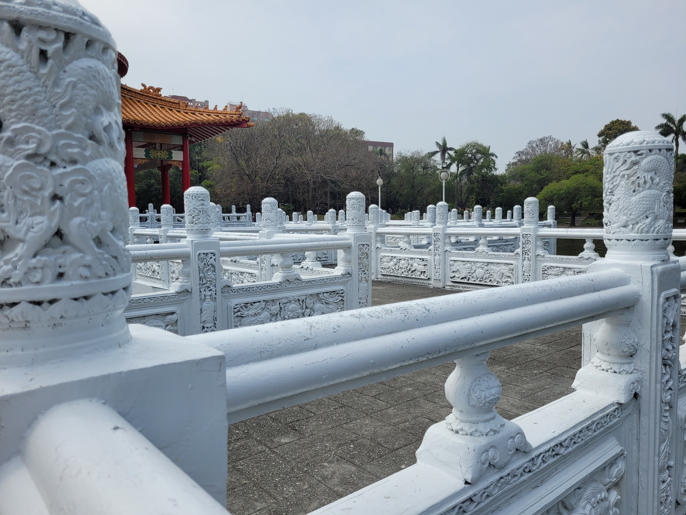

<
>
I'll be back in France in
Details
07:55 - June 23th 2025 - Charles de Gaulle (Terminal 1)
Days
Hours
Minutes
Seconds
🛬
🥳
🎉
Continue
My pictures
Pictures
June 17, 2025
Picture of the day
- Jiufen coast -

All pictures


© Adrien Coureau


![20/05/2025 - Din Tai Fung -
Din Tai Fung is a famous Taiwanese restaurant located in the Taipei 101 tower specialized in dumplings.
It is mainly known for its xiaolongbao, a type of steamed dumpling filled with soup and meat.
In 2013, it was ranked the No. 1 restaurant in the whole Asia continent.
It was the best restaurant I've been to during my trip, and I highly recommend it to anyone who goes to Taiwan!
Just know the waiting time is sometimes around 2 hours, so you have time to visit the Tower after taking your reservation at the desk.](images/97.jpg)


![15/05/2025 - Night view of Taipei -
Taken on the Elephant Mountain, the night view of Taipei has a lot of lights and colors.
At the time of the picture it was the day of the Taipei 101 Marathon, which takes place every year.
Participants have to climb the 91 floors of the Taipei 101 tower which is equivalent to 2046 steps.
So that's why we can see a little boy running on the top screen of the tower.
Usually the night, the tower is illuminated with a color that depends on the day of the week, a different color for each day.](images/92.jpg)


![11/04/2025 - Mille crêpes -
It is my birthday today so here is a cake!
The Mille crêpes is made of layers of crêpes and cream and was invented by the Japanese pastry chef Emy Wada.
While in France, she fell in love with crêpes, but being very thin they tend to dry out quickly.
Emy discovered that stacking them in layers with a filling in between preserved their freshness.
She called her creation “mille crêpes,” a mix between crêpes and mille-feuille.
This cake is very popular in Taiwan and you can find different versions of it everywhere.](images/58.jpg)


![11/03/2025 - Bubble Tea, first round : Taichung -
Bubble tea is a taiwanese drink invented in 1988.
It was originally made with tea, milk, brown sugar, and chewy tapioca balls.
You can find bubble tea shops everywhere in Taiwan, and the drink has now spead everywhere in the world with more than 500 bubble tea shops in France.
This picture was taken in Taichung, in the tea room where the drink was invented... well maybe.
There are two main bubble tea shops that claim to be the first one to have invented the drink, Chun Shui Tang in Taichung (where I went), and Hanlin Tea Room in Tainan.
They went into a legal battle to know who was the first but the case was dismissed, because the Bubble Tea is not a patented product.](images/27.jpg)